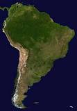

Ю́жная Аме́рика — один из шести материков планеты Земля, расположенный на юге Западного полушария. Омывается на западе Тихим океаном, на востоке — Атлантическим, на севере — Карибским морем, которое является естественным рубежом между двумя Америками. Панамский перешеек на северо-западе материка соединяет Южную Америку с Северной.
В состав Южной Америки также входят различные острова, большинство из которых принадлежит странам континента. Острова в бассейне Карибского моря относятся к Северной Америке. Страны Южной Америки, которые граничат с Карибским морем — включая Колумбию, Венесуэлу, Гайану, Суринам, Французскую Гвиану и Панаму — известны как Карибская Южная Америка.
Площадь континента — 17,84 млн км² (4-е место среди континентов; по площади лишь чуть больше России), население — 387 489 196 (2011 г.) человек (4-е место среди континентов).
По характеру рельефа Южную Америку можно разделить на Горный Запад и Равнинный Восток.
Средняя высота материка — 580 метров над уровнем моря. Вдоль всего западного края тянется горная система Анд. На севере материка возвышается Гвианское плоскогорье, на востоке — Бразильское, между которыми находится Амазонская низменность. К востоку от Анд в предгорных прогибах лежат низменности.
Геологически совсем недавно Анды были ареной активной вулканической деятельности, которая и в современную эпоху продолжается на нескольких участках.
Низменные равнины — Оринокская, Амазонская и Ла-Платская — занимают на материке значительные пространства. Почти плоская поверхность этих равнин благоприятна для образования крупных речных систем Амазонки, Ориноко и Параны с широкими и глубокими речными долинами. Большую площадь материка занимают Гвианское и Бразильское плоскогорья. Часто они состоят из нескольких плато.
В Южной Америке 6 климатических поясов: Субэкваториальный пояс (2 раза), Экваториальный пояс, Тропический пояс, Субтропический пояс и Умеренный пояс.
На большей части Южной Америки климат субэкваториальный и тропический, с хорошо выраженными сухими и влажным сезонами; на Амазонской низменности — экваториальный, постоянно влажный, на юге материка — субтропический и умеренный. На равнинах северной части Южной Америки, вплоть до Южного тропика, температура круглый год составляет 20—28 °С, южнее в январе (летом) она снижается до 10 °С. В июле, то есть зимой, среднемесячные температуры опускаются на Бразильском плоскогорье до 10—16 °С, на плато Патагонии — до 0 °С и ниже. В Андах температура с высотой заметно снижается; в высокогорье она не превышает 10 °С, а зимой здесь нередки морозы.
Наиболее увлажнены наветренные склоны Анд в Колумбии и южных районах Чили — 5-10 тыс. мм осадков в год.
В южной части Анд и на отдельных вулканических вершинах севернее встречаются ледники.
Южная Америка — самый влажный материк Земли.